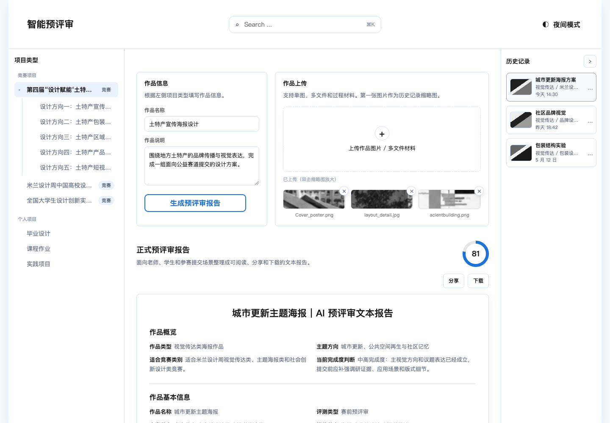
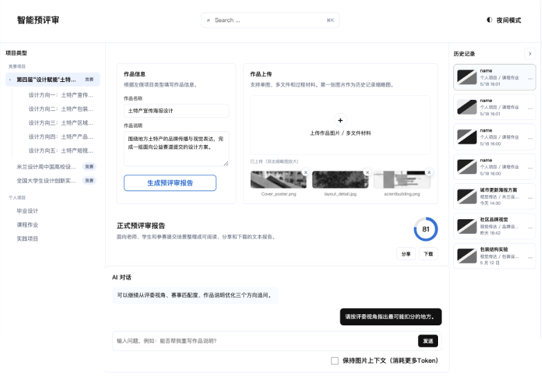

产品简介
智能预评审面向艺术与设计作品赛前评审场景，当前版本用于产品沟通、设计评审、技术方案讨论和后续 API 接入验证。
产品定位
当前产品不是正式在线评审系统，而是静态前端 MVP 原型。它展示作品材料输入、Mock 评审报告输出和基础历史记录管理的工作台闭环。
当前版本不接入真实大模型 API，不包含后端服务，也不会把上传材料发送到服务器。

目标用户
| 用户类型 | 关注点 | 当前支持方式 |
|---|---|---|
| 老板 / 业务负责人 | 判断产品方向和 MVP 价值 | 通过单页闭环展示预评审流程。 |
| 产品经理 | 梳理路径和迭代范围 | 基于分类、表单、报告、历史记录讨论功能边界。 |
| 设计团队 | 观察信息架构和界面状态 | 提供三栏工作台、报告面板、上传面板和主题切换。 |
| 技术团队 | 判断模块拆分和 API 替换点 | 代码按 components、state、data、services、styles 拆分。 |
| 学生 / 参赛者 | 赛前获得预评审建议 | 当前通过 Mock 报告模拟评审结果。 |
界面总览
当前工作台采用顶部栏、左侧分类导航、中间工作区、右侧历史记录的文档化布局。
| 区域 | 功能 | 状态 |
|---|---|---|
| 顶部栏 | 品牌标题、搜索框、日夜主题切换 | 搜索仅 UI；主题切换已实现。 |
| 左侧分类导航 | 选择竞赛或个人项目语境 | 已实现。 |
| 中间工作区 | 作品信息、上传、报告、AI 对话 | 主流程已实现；AI 对话为模拟回复。 |
| 右侧历史记录 | 展示历史记录和更多操作 | 已实现基础操作。 |

MVP 范围
当前包含
单页工作台、分类选择、作品信息、文件上传、文件预览、Mock 报告、报告操作、历史记录和主题切换。
暂不包含
真实模型评审、后端数据库、账号体系、云端文件存储、图片识别、完整历史回访和程序化 PDF。